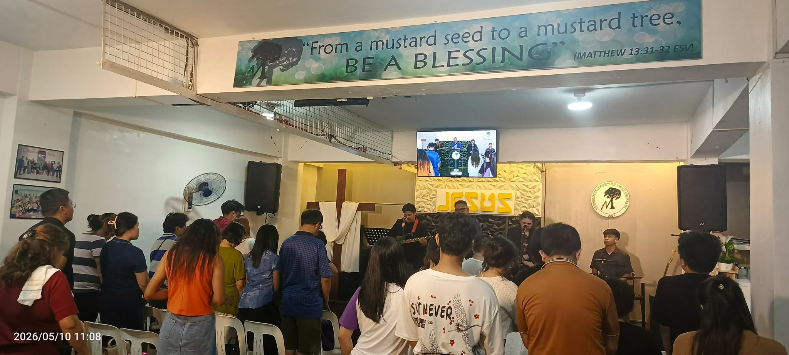

Mustard Seed Harvest Ministries Inc. is a Christ-centered church committed to sharing God's Word, making disciples, and helping people grow in their relationship with Jesus Christ.
We desire to see lives transformed through the Gospel and families strengthened by faith, love, and service.

To lead people to Christ, build disciples, and equip believers to serve God and others.
To become a growing community of believers passionately following Jesus Christ and impacting lives for God's glory.